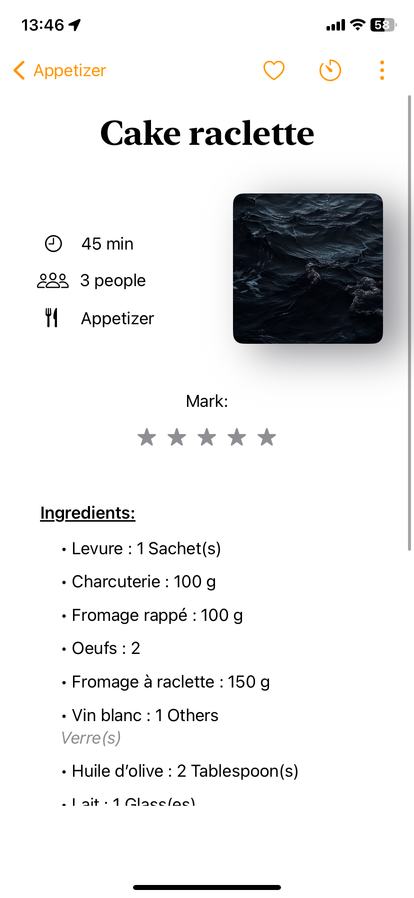
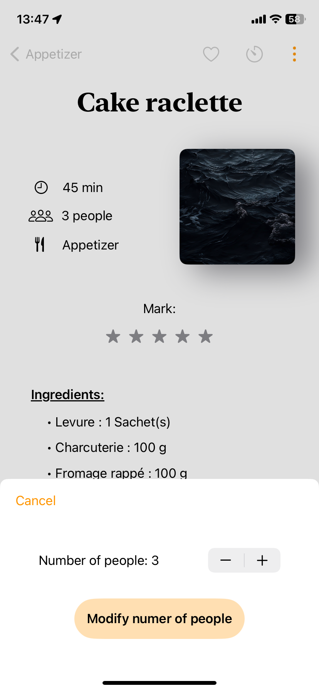

Page des recettes
La liste des recettes existantes dans l’application est structurée en cinq catégories différentes :
Entrées
Plats
Desserts
Cocktails
Favoris
On peut switcher entre les catégories en utilisant la barre de navigation en bas de l’écran. Pour ajouter une recette dans les favoris, vous pouvez glisser la recette vers la droite. Elle sera automatiquement ajouté aux favoris, vous pouvez aussi rester appuyé sur le nom de la recette jusqu’à ce que l’option d’ajout aux favoris s’affiche. De la même façon, vous pouvez supprimer une recette en la faisant glisser vers la gauche. Le clic sur une recette affichera la page Affichage d’une recette.
Enfin, vous pourrez ajouter des recettes depuis le bouton + en haut à droite.
{kind=link}
Affichage d’une recette
Plusieurs fonctionnalités apparaissent sur cette page. Le coeur permet d’ajouter la recette aux favoris une nouvelle fois, le minuteur permet de paramétrer un minuteur.
Warning
Attention, si vous revenez en arrière une fois le timer lancé, il sera annulé. Vous pouvez cependant quitter l’application sans craintes.
Enfin, les trois points cachent d’autres options telles que :
 
L’ajout d’une photo à la recette. Vous pourrez alors choisir entre utiliser votre appareil photo ou en choisir une existante dans votre galerie.
Adapter la quantité des ingrédients si le nombre de personnes est différent du nombre par défaut.
Modifier la recette. Voir Modification de la recette.
Partager la recette via un fichier JSON. Voir Fonctionnalités pour importer la recette si on vous envoie un fichier JSON.
{kind=link}
{kind=link}
Modification de la recette
La page pour éditer les recette est la suivante. Vous pouvez depuis cette vue, modifier le nom, ajouter un lien vers une vidéo/site, modifier la note, les ingrédients et instructions. Pour supprimer un ingrédient faites le glisser vers la gauche, pour l’éditer appuyer sur son texte ou glisser le vers la droite.
{kind=link}